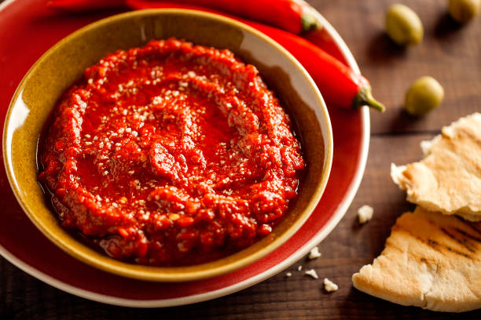

Harissa

Description
Harissa is a spicy chili paste that is a staple in Tunisian cuisine. It is
made from roasted red peppers, hot chili peppers, garlic, and various
spices.
Ingredients
- 11 ounces dried red chile peppers
- ¾ cup chopped garlic
- 2 teaspoons caraway seed
- ½ teaspoon ground coriander seed
- 2 teaspoons salt
Preparation Steps
- Remove the stems and seeds from the chile peppers.
- Soak in cold water for 20 minutes, then drain.
-
Place the peppers, garlic, caraway, coriander, and salt in a mortar;
pound with a pestle until smooth.
-
Place harissa in a jar, and cover the top with a little oil to maintain
freshness.
- Store in the refrigerator.